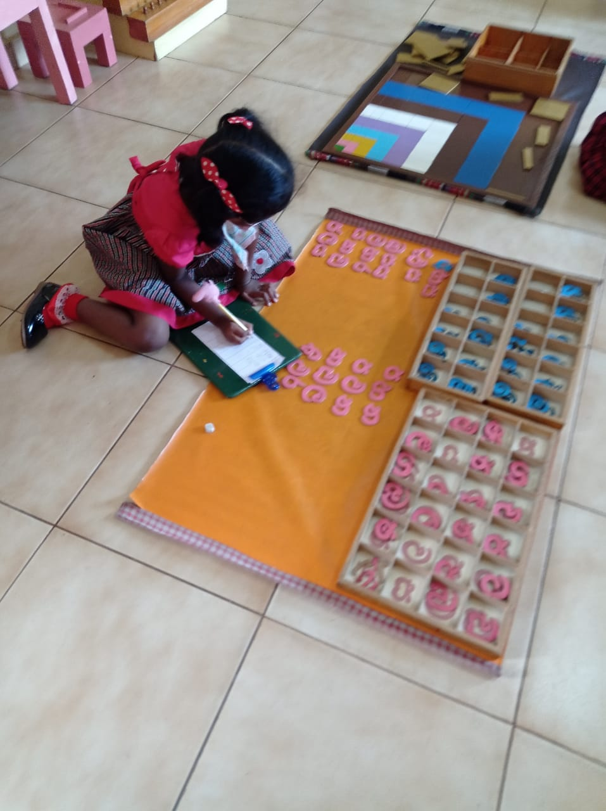
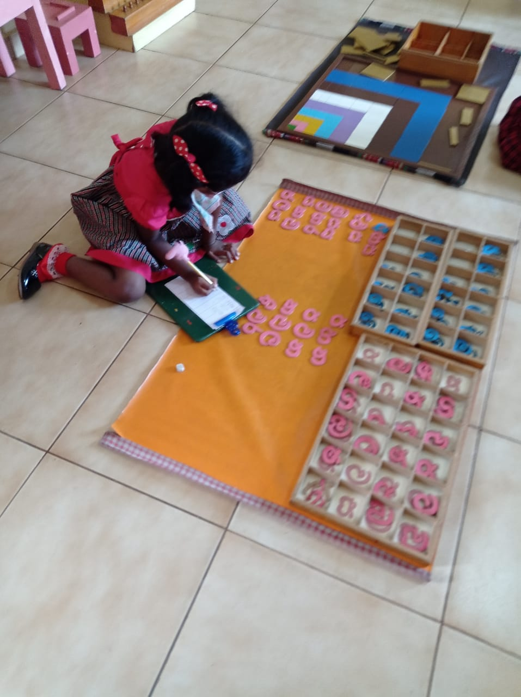
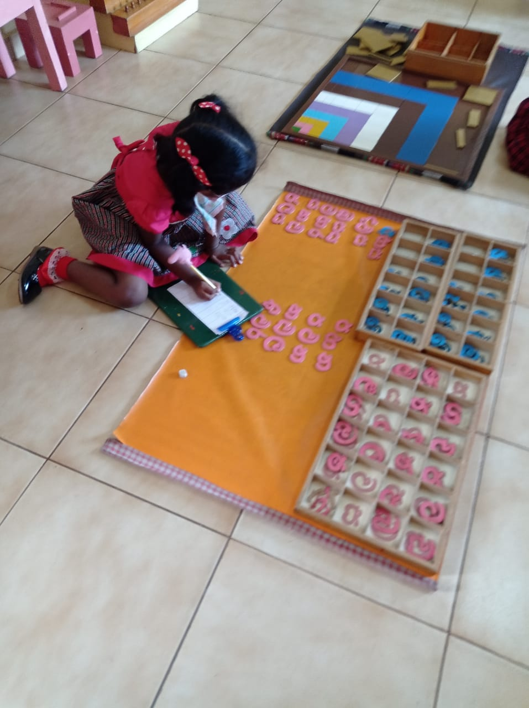

The year 1944 is a significant year for Montessori education in Sri Lanka, as it marks the year in which Dr. Maria Montessori arrived in the country to conduct the first ‘Montessori Training Course’. On this historic day, Good Shepherd Convent, Kotahena was fortunate to be selected to house the first Montessori in Sri Lanka, by Dr Maria Montessori herself. 350 prospective Montessori teachers attended Dr. Maria Montessori’s Training Course conducted, during her visit. Rev Sr Immaculate Huhes, the first Provincial Superior appointed Rev Sr Ita as Principal of the Montessori House of Children, who was also the Directress of Teacher-Training.
In 1963, consequent to Sr Ita’s transfer to Singapore, Rev Sr John Bosco was entrusted with the task of managing the Montessori. Among others to be remembered in our path of growth is Mrs Joyce Gooonasekara, a pioneer in Montessori education in Sri Lanka.
The Good Shepherd Montessori House of Children continues to drive the Montessori in line with Dr Maria Montessori’s vision – “Help the child to help himself” and the teachings of our Saviour, “Let the little children come to me and do not send them away”.
At present, the Good Shepherd Montessori House of Children is located at College Street, Kotahena and has the capacity to cater to 285 children.
The Principals in the Good Shepherd Montessori House of Children in the early days were Rev Sr. Lourdes Paiva, Rev Sr. Stanislaus Vas, Rev Sr. Magdalene Fernando, Rev Sr. Solange Fernando, Rev Sr. Benildus Weragoda, Rev Sr Theresita, Rev Sr. Wilfred Nicholas, Rev. Sr. Dulcy Peiris, Rev. Sr. Ramona Nugera,
The Montessori Institution at Good Shepherd Convent, has grown from strength to strength and blossomed tremendously into an Abode of Love for children.
Classroom Activies
Exercises of Practical Life
Sensorial
Language
Mathematics
Exercises of Practical Life
Materials used for washing, polishing, sweeping
and the activities of daily living.These enable the child to gain independence, control his/her
movements and understand the functioning of his/her immediate environment.
Sensorial
These represent the physical properties in the environment,
e.g. dimension, shape, colour, sound etc., in materialised form.
These exercises serve as an indirect preparation for writing.
Language
In the Montessori method the letters are taught according to
the phonetic sound.The Sandpaper letters, loose letters for building words and reading materials develop language skills in hearing, speech, reading and writing.
These materials enable the child to learn almost effortlessly
to read and write.

Mathematics
Mathematic material takes the child to a new phase of development.
These materials help the child
to learn fundamentals of addition, subtraction, multiplication and division in a simple way.


 
